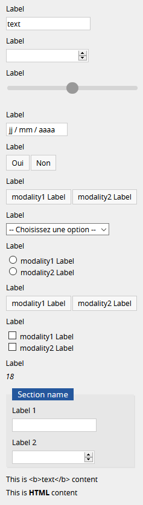

General presentation
Goupile is a tool designed to help users create and run electronical Clinical Report Forms (eCRF). It is a multi-platform and multi-support web application intended to collect the information defined by clinical research protocols.
Contribution of eCRFs
The eCRF is the electronic side of the traditional paper CRF. ECRF enables online data collection by investigators and clinical research associates (CRAs).
Its main contributions are multiple:
- Centralization and simplification of data entry: data entry is carried out online on a secure access portal and via an electronic form adapted to the study
- Securing data collection: the data is hosted on a secure server and accessible only to authorized persons
- Consistency control and data quality optimization: configurable and automated input masks and internal consistency checks limit input errors
- Monitoring of the completeness of the data and monitoring of the collection: the control of the collection is ensured through the implementation of a dashboard, monitoring indicators and an audit trail that can be consulted remotely.
Goupile contribution
Goupile is an online eCRF editor that is fully user-configurable through a simplified interface and has advanced features.
Goupile is a multiplatform (computer, tablet, smartphone) and multisupport (Windows, Linux, Mac Os X, Android, iOS…) solution. It is compatible with any recent web browser (Google Chrome, Mozilla Firefox, Microsoft Edge, Safari…).
It can be deployed on the server desired by the user but also offers hosting on a certified server for Health Data Hosting (HDS) [GPLExpert].
It is free and opensource software released under a free license: AGPL 3.0 license. The source code is available for free online: https://framagit.org/interhop/goupile.
General administration
Administration interface
This interface allows you to create and manage your projects, add users, configure their permissions and archive your projects.
Authentication
Authentication is carried out via the login portal presented below. Username and password are sent by e-mail. Usernames are usually (by convention) in the format "name.name". After entering the username and password, click on "Log in".
Overview
The admin page can be schematically broken down into 3 parts. The top banner [1] allows you to configure which panels are active. You can display (or not) one or two panels by selecting (or deselecting) the panel(s) of interest. By default, the "Projects" [2] and "Users" [3] panels are selected.
Projects
The "Projects" panel allows you to create a new project ("Create a project"), divide it into subprojects, configure general parameters and assign users with different rights to it.
Users
The "Users" configuration panel allows you to create a new user ("Create a user"), modify the parameters of a user ("Modify") and assign the rights of a user on a given project.
Archives
The "Archives" control panel allows you to create a new archive ("Create archive"), restore ("Restore"), delete ("Delete") or upload ("Upload archive") an archive.
An archive records the exact state of all projects (with its forms and data) when it is created. Once the archive has been created, you can download the created file (with the extension .goupilebackup) and store it securely by suitable means.
Please note, to be able to restore this file, you must keep the restore key that was given to you when you created the domain. Without this key, recovery is not possible and data is lost. In addition, it is strictly impossible for us to recover this key if you lose it!
Password change
To change your password, click on the drop-down menu icon next to your username [1] then on "Change password" [2]. The new password must contain at least 8 characters from 3 different classes (numeric, alphanumeric, special symbols).
Disconnect the session

To disconnect your session, click on the drop-down menu icon next to your username [1] then on "Disconnect" [2].
Creation of a project
To create a new project, you must connect to the administrator interface, display the "Projects" control panel [1] then click on "Create a project" [2].
A new window appears ("Creating a project"). You must define a project key ("Project key"), a project name ("Name") and you will have the choice to add (or not) default pages ("Add default pages").
The project key will appear in the project login URL. Its format must be alphanumeric and cannot exceed 24 characters. Uppercase letters, accents and special characters are not allowed (except the short dash or dash of 6, '-'). The name of the project corresponds to the name you want to give to your project, and will be visible to the user as the browser page title. Its format can be numeric or alphanumeric. Uppercase and special characters are allowed. The "default pages" allow the addition of a few sample pages allowing you to familiarize yourself with the design of an eCRF with Goupile and provide a first working basis. If you are already familiar with designing an eCRF with Pin, you can click "no". After completing the various fields, click on "Create" [1].
Once your project has been created, several menus are available via the "Projects" configuration panel: "Divide" [1], "Rights" [2], "Configure" [3] and "access" [4].
By default, projects are single-center. To transform a single-center project into a multi-center project, you can use the "Divide" option.
The "Divide" option allows you to subdivide your initial project into different sub-projects. A new window appears ("Division of *your project key*"). You must then enter a subproject key ("Subproject key") and a subproject name ("Name") according to the same constraints as those mentioned for the key and the name of the project. After completing the various fields, click on "Create" [1].
Once your subproject has been created, several actions are available via the "Projects" configuration panel: "Rights", "Configure" and "Access".
The "Rights" option allows you to create a new user ("Create a user"), modify the parameters of a user ("Modify") and assign rights to a user ("Assign") for your project (or sub-project according to the selection made).
The "Configure" option allows you to modify the parameters of your project ("Modify") or delete your project ("Delete").
The "Modify" taballows you to modify the name of your project, activate (or not) the offline use (by default the option is not activated), modify the synchronization mode (by default the synchronization mode is "Online") and set the default session. Off-line use allows the application to work without an internet connection. The "Online" synchronization mode corresponds to a copy on the data server, the "Offline" synchronization mode corresponds to a local copy only (on your machine) of the data without a copy on the server and the synchronization mode "Mirror" allows an online copy of the data and replication of all data on each machine used. The default session is used to display the session of a given user during connection.
The "Delete" tab allows you to delete your project.
User Management
To create a new user, you must connect to the administrator interface, display the "Users" configuration panel [1] then click on "Create a user" [2].
A new window appears ("Create user"). You must define a user name ("Username"), a connection password ("Password") and its administrator status or not ("Administrator"). You can optionally complete this information with an email address ("Email") and a phone number ("Phone").
The username is the user's login. It can be in numeric or alphanumeric format. Uppercase and special characters (except for the short dash '-', underscore '_' and period '.') are not allowed. We recommend a username in the format: "firstname.lastname".
The password must contain at least 8 characters from 3 different classes (numeric, alphanumeric, special symbols). The administrator status allows access to the administrator interface. By default, administrator status is not enabled.
After entering the various fields, click on "Create" [1].
Once your user has been created, a menu is available via the "Users" configuration panel: "Modify".
The "Edit" tab allows you to modify the user name, password, email, telephone and administrator status of the user.
The "Delete" tab allows you to delete the user.
To assign permissions to a given project to a user, display the "Projects" configuration panel [1] and click on the "Permissions" option of the project of interest [2].
The "Users" configuration panel is then displayed to the right of the "Projects" configuration panel. You can assign permissions to a given user via the "Assign" menu of the user of interest [1].
A new window opens ("Permissions of *your user* on *your project key*"). You can assign development or record permissions to your user.
These permissions include:
| Permission | Explanation |
|---|---|
| Develop | Edition of forms |
| Publish | Publication of modified forms |
| Configure | Project and center configuration (multi-center) |
| Assign | Change user permissions on the project |
| Permission | Explanation |
|---|---|
| Load | Read records |
| Save | Edit records |
| Export | Export data en masse (CSV, XLSX, etc.) |
| Batch | Recompute all calculated variables on all records |
It should be noted that the recording rights can only be configured after having previously edited a first version of the eCRF.
Project development
To create an eCRF, you must connect to the administrator interface, display the "Projects" configuration panel [1] then click on the "access" menu of the project of interest [2]. You can bookmark this link to directly open the project afterwards.
Default view
A new tab opens in your browser. The black banner (top page) is used to configure the display of the page. You can display (or not) one or two panels by selecting (or deselecting) the panel (s) of interest. By default, the "List" panel [2] is selected. The different configuration panels are: "Code" [1], "List" [2] and "Input" [3]. The center drop-down menu [4] allows you to navigate between the different pages of your eCRF (here the first page is called "Introduction"). Another drop-down menu [5] allows you to navigate between the different sub-projects if your project has been subdivided. The rightmost drop-down menu [6] allows you to change your password or disconnect your session.
Code
The "Code" control panel allows you to edit your eCRF. It contains two tabs: "Application" and "Form". By default, the "Form" tab is displayed.
The "Form" tab allows you to edit the content of your eCRF for a given page (here "Introduction". As a reminder, navigation between the different pages of your form is done via the drop-down menu [1]).
The content is edited in line of codes via a script editor. The programming language is JavaScript. Knowledge of the language is not necessary for editing simple scripts. Editing the eCRF and the various code modules will be discussed in more detail later.
The "Application" tab allows you to edit the general structure of your eCRF. It thus makes it possible to define the different pages and set of pages. The structure is edited in line of code via a script editor. The programming language is also JavaScript. Editing the structure of the eCRF and the different code modules will be discussed in more detail later.
Listing
The "List" configuration panel allows you to add new observations ("Add a follow-up") and to monitor the data collection. The "ID" variable corresponds to the identifier of a collection form. It is sequential by default but this can be configured for each project. The variables "Introduction", "Advanced" and "Layout" correspond to the three pages of the example eCRF.
Data entry
The "Entry" panel allows you to collect a new observation (new patient) or to modify a given observation (after selecting the observation in the "List" configuration panel). Navigation between the different pages of the eCRF can be done with the drop-down menu [1] or the navigation menu [2]. After entering your data, click on "Save" [3].
Standard widgets
Examples of predefined widgets, with the code on the left and the result on the right
Widgets are created by calling predefined functions with the following syntax:
function ( "variable_name" , "Label presented to the user" )
Variable names must begin with a letter or _, followed by zero or more alphanumeric characters or _. They must not contain spaces, accented characters or any other special character.
Most widgets accept optional parameters like this:
function ( "variable_name" , "Label presented to the user" , { option1 : value, option2 : value } )
Pay attention to the syntax of the code. When the parentheses or quotes do not match, an error occurs and the displayed page cannot be updated until the error persists. The section on errors has more information on this.
Entering information
| Widget | Coded |
|---|---|
|  | form.text("variable", "Label") |
| form.number("variable", "Label") | |
| form.slider("variable", "Label") | |
| form.date("variable_name", "Label") | |
| form.binary("variable_name", "Label") | |
| form.enum("variable_name", "Label", [["modality1", "modality1 Label"], ["modality2", "modality2 Label"]]) | |
| form.enumDrop("variable_name", "Label", [["modality1", "modality1 Label"], ["modality2", "modality2 Label"]]) | |
| form.enumRadio("variable_name", "Label", [["modality1", "modality1 Label"], ["modality2", "modality2 Label"]]) | |
| form.multi("variable_name", "Label", [["modality1", "modality1 Label"], ["modality2", "modality2 Label"]]) | |
| form.multiCheck("variable_name", "Label", [["modality1", "modality1 Label"], ["modality2", "modality2 Label"]]) | |
| form.calc("variable_name", 18) |
Other widgets
| Widget | Coded |
|---|---|
| form.section("Section name", () => {form.text ("variable1", "Label 1") form.number ("variable2", "Label 2")}) | |
| form.output("This is <b> text </b> content") | |
| form.output(html`This is <b> HTML </b> content`) |
Programming errors
Do you see the error? There is one closing parenthesis in excess on the right.
Programming languages (like JavaScript used here) are very susceptible to syntax errors. If you make a mistake, the code cannot be executed and an error message will be displayed.
If this happens, don't panic! Most mistakes are easy to correct. If you can't find the error, you can usually just go back using Ctrl + Z.
Publishing the project
Simply publish your form when it's ready.
Once your form is ready, you need to publish it to make it accessible to other users. After publication, users will be able to enter data on these forms.
To do this, click the Publish button at the top right of the code editing panel. This will display the publish panel (visible in the screenshot on the left).
This panel summarizes the changes made and the actions that the publication will take. In the screenshot on the right, we see that a page has been modified locally (called " receptions ") and will be made public after acceptance of the modifications.
Daily use
Once the form is ready, the monitoring and export panels allow you to follow the progress of data entry and to export the data (if you have permission to do so).
Data tracking
The monitoring table displays the list of records with their status (not entered, recorded, completed). From this monitoring table, you can directly access a specific record to complete it or verify the data entered.
Data export
Test your form and instantly check the data produced in the export panel.
The data panel displays your data and allows you to export it, in CSV or XLSX format.